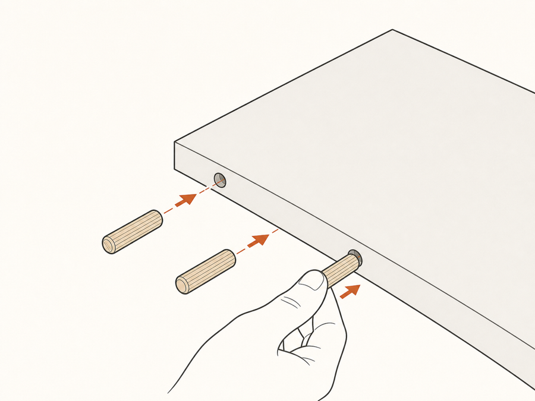
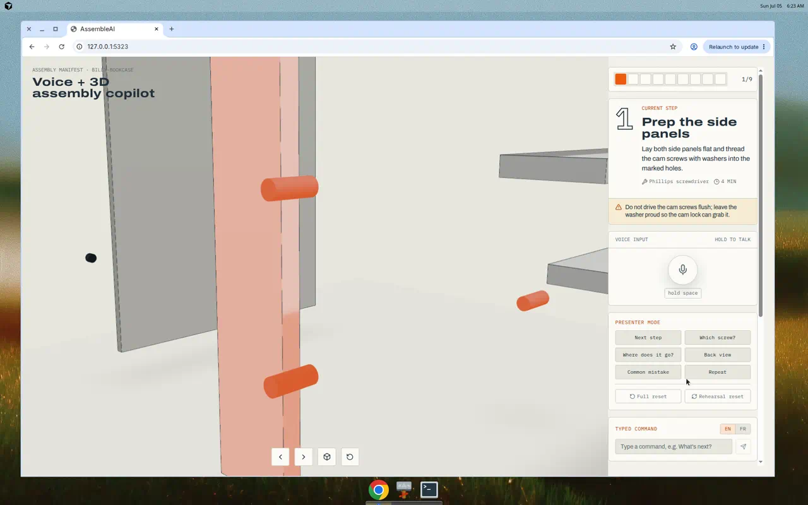
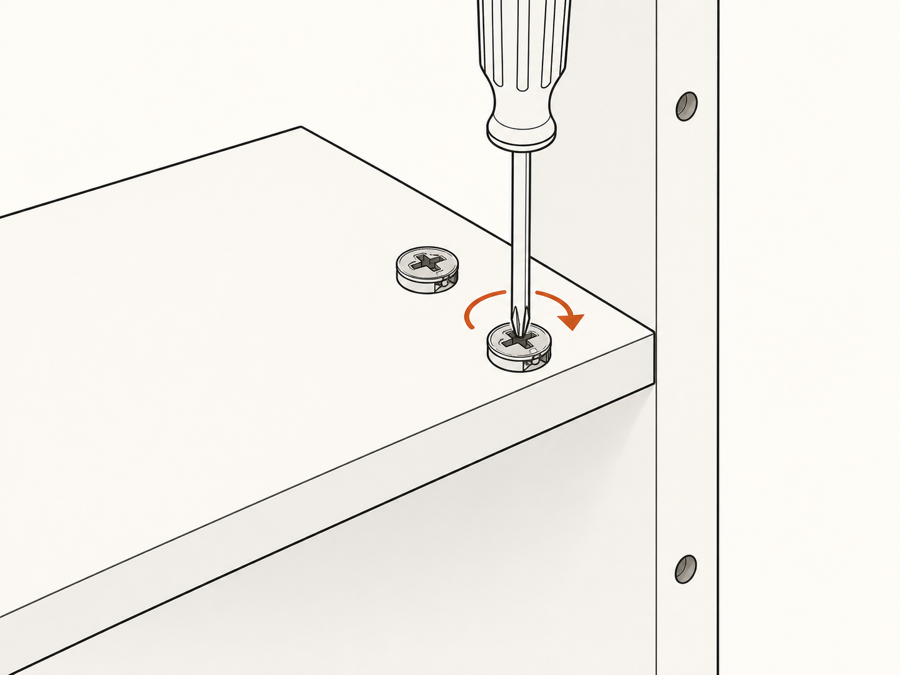
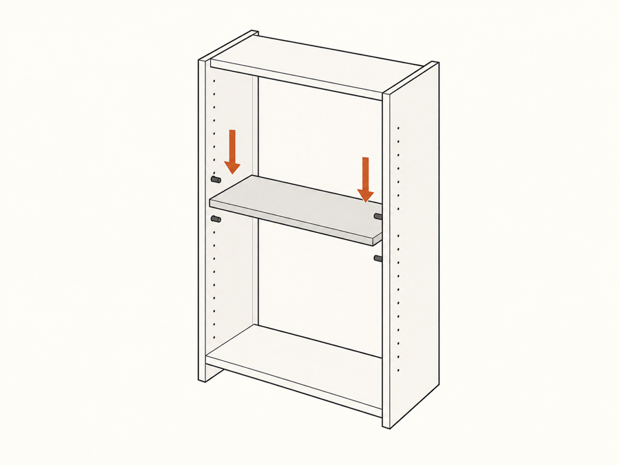

01

Ask with your hands full
Hold space and speak. Push-to-talk voice capture works with the browser mic or a paired headset — no typing, no page flipping.
“Where does this panel go?”AssembleAI is a voice-first 3D assembly copilot. Ask which screw to use or where a panel goes — the model moves and highlights the answer before it even finishes speaking.
Hold space to talk · works offline · no account needed

118331 · highlightedEvery question gets a spatial answer first: the camera moves, the right part glows safety-orange, then a short spoken reply confirms what you already see.

Hold space and speak. Push-to-talk voice capture works with the browser mic or a paired headset — no typing, no page flipping.
“Where does this panel go?”
The 3D bookcase advances, spins, or explodes to the exact step. The part in question is highlighted in the model, the parts rail, and the transcript — all in sync.
“Show me from the back.”
Each step carries the common mistake people actually make — like driving cam screws flush. Ask, and it warns you before you drill.
“Did people mess this step up before?”“Which cam screw should I use?”
Use the cam screw 118331 with the washer. I’ve highlighted all four in the side panel — don’t drive them flush.
“Et cette vis, elle va où ?”
Cette vis 118331 se place dans les trous marqués du panneau latéral — regardez la surbrillance orange.
“What’s next?”
Step 5: attach the back panel. Moving to the back view now.
Speech recognition feeds a deterministic intent engine. Viewer and step state update immediately; the spoken reply just confirms what changed. That ordering is what makes it feel spatial instead of chatty.
Everything degrades gracefully: no mic, no WebGL, no network — the walkthrough still works end to end.
Hold space to speak. Web Speech API by default, or route a specific device (like Ray-Ban Meta glasses) through a server-side STT endpoint.
A hand-authored 14-step manifest drives the GLB viewer: cameras, highlights, explode levels, and per-step poses.
Upload a photo and ask “Did I do this right?” — a Gemini-backed vision check detects the step and judges correctness.
An EN/FR command box submits through the same intent pipeline as voice — perfect for mic-free rooms.
One-click buttons for the six critical demo utterances, plus Full reset and Rehearsal reset for instant recovery.
WebGL fallback line drawing, offline intent parsing, and a mock photo check keep the demo alive with zero network.
Clone the repo, run two commands, and hold space to talk. The whole walkthrough works offline — no keys, no accounts.